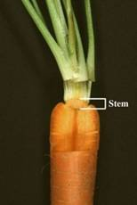
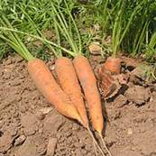
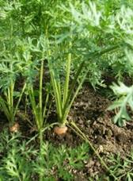
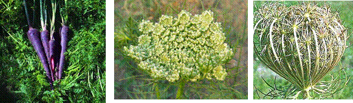
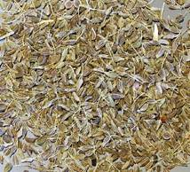
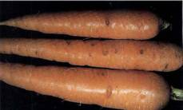
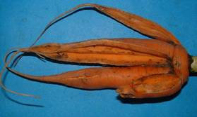

HORT 281 :: Lecture 27 :: ORIGIN, AREA, PRODUCTION, VARIETIES, PACKAGE OF PRACTICES FOR CARROT

Origin, area, production, varieties, package of practices for CARROT
CARROT - (Daucus carota L.)
(2n – 2 x 18)
(Hindi – Gajar)
Family: Apiaceae
Carrot is an ancient cool season root vegetable. Roots are used for making soups, stews, curries, pies, pickles and for salad purposes. Sweet preparation ‘gajar halwa’ prepared out of carrot is delicious and popular. Roots are also canned. Carrot roots are rich sources of α and β carotenes (1890 μ g/100g) and contain sucrose 10 times that of glucose or fructose. Carrot leaves are a good source of leaf protein. It is sued as fodder and for preparation of poultry feeds.
Carrot has many medicinal properties. It increases quantity of urine and helps in elimination of uric acid. It has cooling effect and is beneficial for people suffering from gall stones, constipation and heat troubles.
Purple and black carrots are used for preparation of a beverage called ‘kanji which is a good appetizer. In France, essential oil separated from seeds is sued for flavouring liquors and all kinds of food substitutes.
Origin
According to Mackevic (1929), Afghanistan is the primary centres of origin of carrot since a large diversity for morphological and root characters occur. Considerable variability for root also exists in India, indicating India also as a centre of origin. Root colour varies from absolutely colourless through light lemon light orange, deep orange, light purple, deep purple to almost black.
Botany
Carrot is an annual or biennial herb with an erect or branched stem (30-120 cm high) arising from a thick fleshy root. Leaves are pinnate. Edible portion is the fleshy tap root composed of an outer cortex (phloem) and inner core (xylem). Inflorescence is compound umbel and is produced during second phase. Anthesis in a single umbel is completed in 7-9 days. Individual flowers are bisexual with white or yellow petals. They so called carrot seed is actually a fruit, an indehiscent mericarp, which consists of a single seed. Two mericarps pair to form a single rhizocarp, the real carrot fruit which develops from a two-loculed ovary.
|  |  |  |
|  | ||
|  | ||
Root development
In most cultivars, the root first grows in length and then increases sits diameter. By 12-16 days after sowing, the tap root reaches its optimum length. Shape and size of roots are influenced by several factors. Varietal characters, un-decomposed organic matter, any obstruction to its downward growth etc. are a few factors causing cracking, forking and branching of roots. Temperature also influences shape of root. Variety Chantney produces longer and more slender roots at 18oC, while they 7 were shorter and thicker at 24oC. High temperature and irregular water supply cause deep depression on roots causing rough root
surface. Excessive irrigation after drought results in white corky outgrowth where side roots may develop.
Temperature has significant influence on colour and development of roots. A temperature range of 15.5 – 21.1oC is the best for colour development. Carotene content decreases above 21.1oC and below 15.5oC. Usually the young roots are yellowish in colour which changes to whitish yellow, light yellow, dark yellow, orange or orange red as a result of accumulation of carotenoids pigments. Carotene accumulation takes place first in old phloem cells followed by old xylem vessels and finally to centre core.
Cultivars / Varieties
Varieties with long, orange coloured and smooth roots are preferred in India. Many varieties, both indigenous and exotic, differing in temperature requirement, length, size, shape and colour of roots and duration of crop are grown in India. Varieties are also classified into temperate and tropical types.
- Temperate or European or biennial types require a low temperature of 4-8oC for flowering. They do not produce seeds in plains of India, e.g., Nantes, Half long, Early Nantes, Pusa Yamadagini and Ooty 1.
- Tropical or Asiatic or oriental or annual types which do not require low temperature for flowering and they produce seeds in plains of North India. E.g., Pusa Kesar, Pusa Meghali.
A brief description of important varieties is given below:
Tropical varieties
Pusa Kesar:Evolved at IARI, New Delhi by selection from a cross between Local Red and Nantes Half Long. Roots are scarlet in colour sufficiently red coloured central core compared to yellow or white core in Local; roots stay one month more than the Local red without bolting; contains high carotene (38 mg/100 g).
Pusa Meghali: Selection made at IARI, New Delhi by crossing Pusa Kesar and Nantes. It has long orange coloured tapering roots with self coloured roots.
Hisar Gairic: Roots long (18.5 cm), tapering, light brick red in colour, less fibrous with thin self colouring core. Yield 25-30 t/ha.
European varieties
Nantes Half Long:The variety commonly known as Nantes is evolved at IARI Regional Station, Katrain; roots are small, slim, rough, sweet, cylindrical and stumpy with abrupt tail; the core is small and self coloured; yield is 15-20 t/ha in 90-110 days.
Early Nantes: Roots almost cylindrical terminating abruptly in small thin tail, 12-15 cm long, orange flesh with self coloured core; duration 90-100 days.
Chantenay: Suitable for canning and storage; roots are reddish orange with a length of 11.5 – 15.0 cm.
Chaman: Developed at SKUA&T, Srinagar; roots long, cylindrical and semi blunt; tolerant to cracking; yields 25-27 t/ha.
Pusa Yamadagini:Developed at IARI Regional Station, Katrain; roots 15-16 cm long, orange with self coloured core, slightly tapering and semi-stumpy with medium top; 9-10 t/ha in 90-100 days.
Ooty-1:Developed at Horticultural Research Station (TNAU), Udhagamandalam: roots are 25 cm long with deep orange colour; yield 45-50 t/ha in 100-110 days.
Zino:Introduced from Germany in the Nilgiris hills of Tamil Nadu by the State Department of Horticulture; roots deep orange with self coloured core; duration 110-120 days.
Imported varieties like Danvers and Imperator are also popular in the country. Gold King Indian Kuroda, Nebora and Super Kuroda are a few of the carrot varieties marketed by private seed industry.
Climate
Climatic and soil factors have great influence on shape and colour development of roots. Carrot is grown as a spring summer and autumn crop in hills and as a winter crop in plains of North India. Ideal temperature for germination of seeds is 7.2-23.9oC, while for root growth and development it is 18.3-23.9oC. Tropical types produce roots even at a temperature of 25oC.
European types require a low temperature of 4.8-10.0oC for 4-6 weeks at any time during development of roots or after they mature either in storage or in field. Seed stalk formation takes place only when plants are subjected to a subsequent temperature of 12.2 – 21.1oC.
Soil
Deep and well drained friable soils are essential for proper root development. For early crop, sandy loam and for heavy yield, silt loam is preferred. Long rooted cultivars perform the best in light soil. In heavy soils, short stump rooted varieties having round and heart-shaped roots are preferred. In hard soils, roots will be rough and coarse. The ideal soil pH is 6.6 – 7.1
Land preparation and sowing
Soil is ploughed to a fine tilth. Utmost can should be taken to remove clods, stones etc. Land is then made to ridges and furrows at 30-45 cm apart in small plots of convenient size for irrigation. Seeds are sown on ridges or on flat beds either by dibbling in lines or by broadcasting. Seeds are first rubbed to remove fine hairs and mixed with fine sand before sowing to facilitate even distribution. For sowing in lines, a small furrow of about 1.5 cm deep is made at top or on either sides of ridges with finger or with sharp end of a stick. Seeds mixed with sand are dropped in furrow by hand and is covered lightly with soil. Seed rate varies from 6 to 10 kg/ha depending on variety and sowing. Seedlings should be thinned to a plant to plant distance of 5-8 cm, soon after they are established. Otherwise,over crowding leads to deformed roots.
It is advisable to give light irrigation immediately after sowing or to soak seeds in water for 12-24 hours before sowing to hasten germination.
Manuring
In addition to 20-25 tonnes of farmyard manure, a fertilizer dose of 40-50 kg N, 40-50 kg P2O5 and 80-100 kg K2O is recommended for the crop, of which entire dose of farmyard manure, half N and full P and K are to be applied as basal dose at the time of final land preparation. Remaining dose of N can be applied at the time of first hoeing.
Interculture
Carrot seeds take about a week to germinate and initial growth of seedlings is rather slow. First irrigation should be given immediately after sowing followed by another 4-6 days after. Soil should be kept moist by frequent light irrigation for proper growth of roots. Excessive irrigation, that too towards the last stage, should be avoided as sit may result in excessive vegetative growth.
Since seedlings grow very slowly care should be taken to remove weed growth during initial stages.
Carrot roots do not come up like that of radish and hence, earthing up is not required. Soil should be hoed frequently to allow proper aeration and to prevent discolouration of crown.
Harvest
Roots grown on ridges are usually harvested after loosening soil with a spade and by pulling out roots by grasping top. In flat ground, top is removed close to ground and roots are dug out with a spade. A light irrigation is usually given before harvesting for easy uprooting.
Yield varies with season, climate, varieties etc. Tropical types yield 20-30 t/ha. and European types yield 10-15 t/ha.
Harvested roots are put in mulberry basket and dipped in flowering water for washing. Roots are then partially dried, trimmed and graded before sending to distant markets. Trimming, grading etc. are done at a cool place. Fresh Carrot roots can be stored for 3-4 days under ordinary conditions and for six months at 0oC and 93-98% RH.
Seed production
Tropical annual types produce seeds in plains and temperate biennial types in hills. Both root to seed and seed to seed methods are recommended for carrot seed production. Seed to seed method is followed to get more seed yield. Root to seed method is flowed to get quality seeds. However, in this method, high incidence of root rot is noticed. To check root rot in transplanted crop, planting roots without cutting is recommended.
Carrot is a cross-pollinated crop due to protandry and pollination is done by honey bees. Being a cross-pollinated crop, allow an isolation distance of 1000 m from other varieties. Opening of umbel starts from periphery and completed within 6-7 days. Seed yield is 500-600 kg/ha.
Pests and diseases
Pests and diseases are not major problems in cultivation of carrots. Among pests, carrot rust fly (Psila rosae) maggots burrow into roots resulting in unmarketable roots. Lycus bug damages seed crop and reduces viability and germination of seeds. Seed treatment with insecticides controls this pest.
Among diseases, Cercocpora leaf spot and root rot caused by Fusarium oxysporum adversely affect stand of crop. Watery soft rot caused by Sclerotenia sclerotianum occurs in storage.
Physiological disorders
Cavity spot -This is primarily caused by calcium deficiency induced by excess potassium. Symptoms appear as a cavity in cortex.
|  |
Carrot splitting –Splitting or cracking of roots is a major problem in carrot cultivation. Though this is a genetic character, other factors are also influencing cracking. Excess nitrogen and its untimely application promote cracking.
|  |
**********
1. The mode of cross pollination in carrot is due to the presence of ______ flower.
a. Protogynous b. Protandrous c. Dichogamy
d. Duodichogamy
2. Carrot was first introduced in India from ___________
a. Persia b. Sri Lanka c. Paris d. Japan
3. Cavity spot of carrot is due to the deficiency of ___________
a. Boron b. Zinc c. Calcium d. Iron
4. Aster yellow is a disease of _____________
a. Tomato b. Carrot c. Onion d. Beetroot
5. Carrot root is a modification of
a. Adventitious roots b. Tap root c. Runner d. Sucker
| Download this lecture as PDF here |